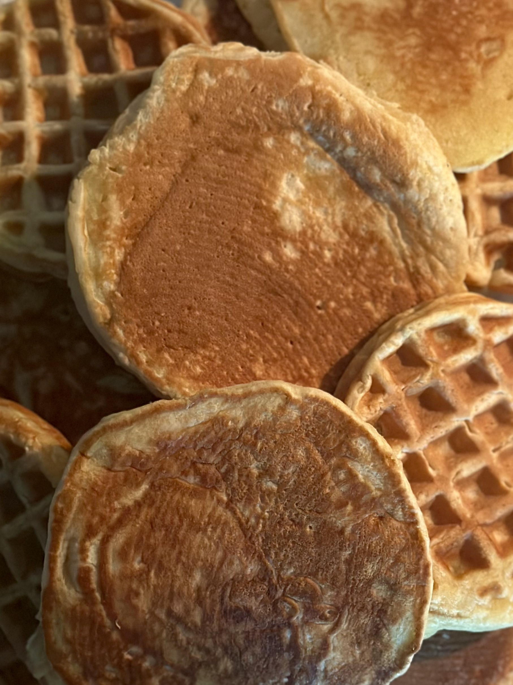
Pancakes and waffles.
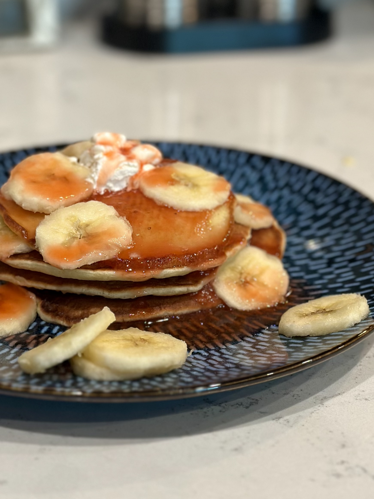
Pancakes with strawberry syrup, bananas, and cream.
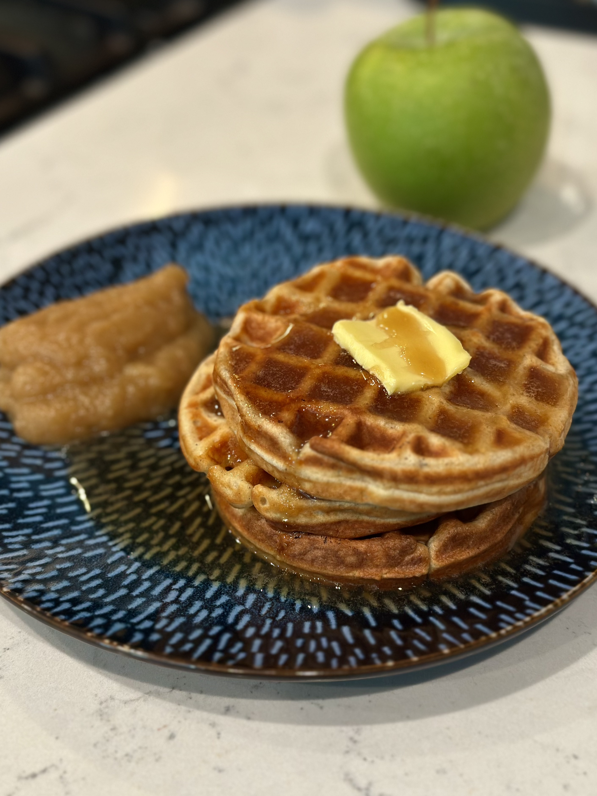
Cinnamon waffles with apple syrup and apple sauce.
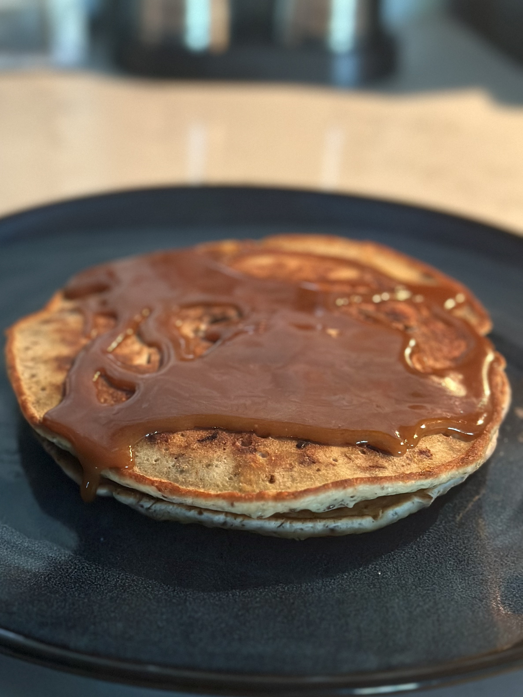
Chocolate chip pancakes with caramel sauce.
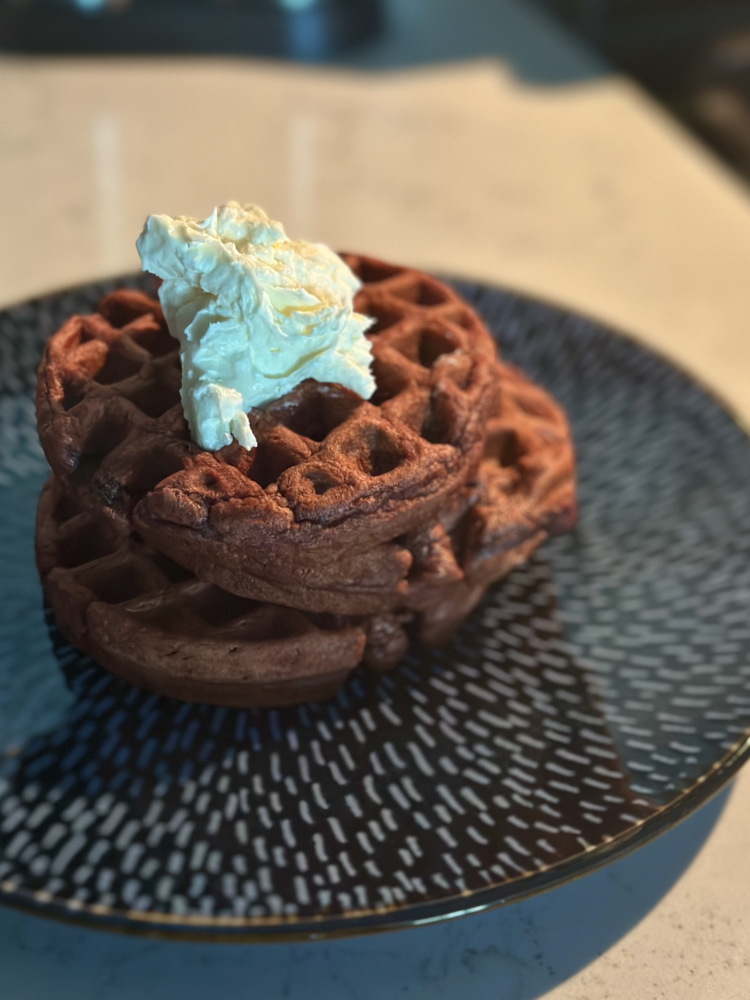
Red velvet waffles with cream cheese frosting.
Overview
What are pancakes and waffles?
Pancakes and waffles are batter-based foods typically made from flour, liquid, eggs, and other ingredients such as sugar, fat, and leavening agents. Although their ingredients can be very similar, they are distinguished primarily by how they are cooked. Pancakes are cooked on a flat surface such as a griddle or frying pan, while waffles are cooked between the patterned plates of a waffle iron.
In the United States, both are strongly associated with breakfast and are commonly served with butter, syrup, fruit, or other sweet toppings. However, both can also be prepared or served as savory foods, and pancakes in particular belong to a much broader family of flat cakes found in cuisines throughout the world.
Origin and History
Pancakes are an extremely old form of food, and flat cakes made from ground grains and water existed long before the modern pancake. Written descriptions of pancake-like foods survive from ancient Greece and Rome, while similar preparations developed independently in many other parts of the world. The English word "pancake" appeared much later, during the medieval period.
Waffles developed from the practice of cooking batter between two heated metal plates. Early forms of these irons were used in Europe, where patterned plates could imprint designs onto thin cakes or wafers. Waffle making became particularly associated with parts of northern Europe, including the Netherlands, and Dutch settlers brought the tradition to North America during the seventeenth century. The English word "waffle" itself derives from Dutch wafel.
Pancakes vs. Waffles
American pancakes and waffles often begin with similar batters, but differences in their proportions and cooking methods produce noticeably different results. Pancakes are generally soft and fluffy throughout, while waffles have a crisp, browned exterior surrounding a softer interior.
Waffle batter commonly contains somewhat more sugar and fat, both of which contribute to browning and a richer, crisper exterior. American-style pancakes, meanwhile, commonly rely more heavily on chemical leavening to create their characteristic height and fluffy texture. The waffle iron also exposes the batter to heat from both sides at once, while its patterned plates greatly increase the food's surface area. The resulting ridges and pockets create more browned exterior and conveniently hold syrup, butter, and other toppings.
Variations
Pancakes appear in many forms around the world. American pancakes are generally thick, fluffy, and chemically leavened, while French crêpes are considerably thinner and usually unleavened. Other examples include buckwheat-based Breton galettes, Eastern European blini, and the many savory pancakes found throughout East Asian cuisines. These foods differ considerably in their ingredients, texture, and preparation, illustrating how broadly the term "pancake" can be applied across different culinary traditions.
Waffles also vary by region and style. Belgian waffles are generally thicker and have deeper pockets than typical American waffles, while Liège waffles are made from a richer, yeast-raised dough containing pearl sugar rather than a pourable batter. American waffles are generally thinner and are commonly made from a chemically leavened batter. Despite these differences, their characteristic shape comes from being cooked between the patterned plates of a waffle iron.
Recipe
The main quantities are for pancake batter, and quantities in parentheses are for waffle batter.
Ingredients
- 140 g flour
- 20 g sugar (25 g)[1]
- 1 1/2 tsp baking powder (1/2 tsp)[2]
- 1/2 tsp salt
- 200 g milk (240 g)[3]
- 2 tbsp butter, melted (3 tbsp)
- 1 large egg
- 1 tsp vanilla (optional)
Directions
- In a medium bowl, thoroughly combine all the dry ingredients.
- In a separate small bowl, mix all the wet ingredients.
- Pour the wet ingredients into the dry ingredients and stir just until a batter is formed. Some lumps are fine.
- If making pancakes, pour a scoop of batter onto a greased griddle over medium-low heat. Cook until bubbles begin to form on the surface and the bottom is lightly browned. Flip and cook the other side.
If making waffles, pour a scoop of batter onto a greased waffle iron, making sure to cover most of the bottom plate. Close the iron and cook until the waffles are golden and crispy.
Notes
- Waffles typically have more sugar than pancakes, contributing to their darker, crisper exterior.
- American-style pancakes tend to have more leavening agents than waffles, giving them their signature light and fluffy texture. Pancakes from other culinary traditions may contain little to no leaveners and can be much thinner.
- I prefer a thicker pancake batter to produce fluffier pancakes and a thinner waffle batter to ensure even coverage over the waffle iron. However, these quantities are guidelines, and the amount of milk you use can be adjusted as you see fit. If unsure, start with 200 grams and gradually add more if needed.
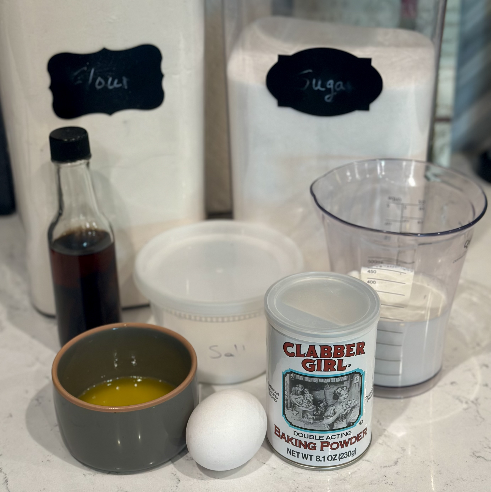
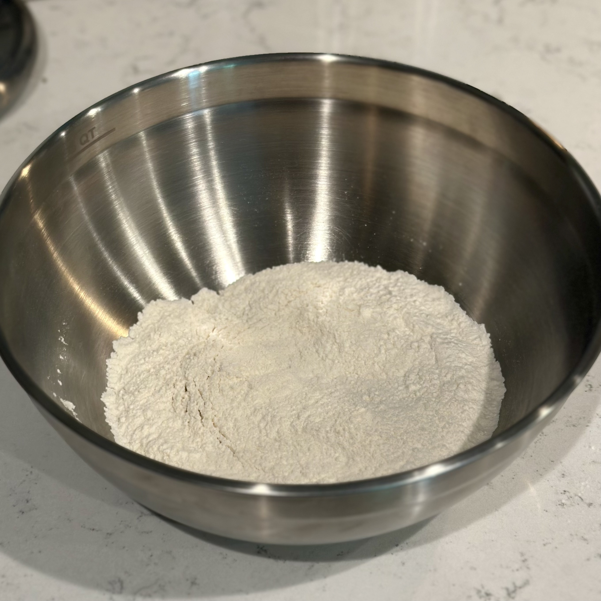
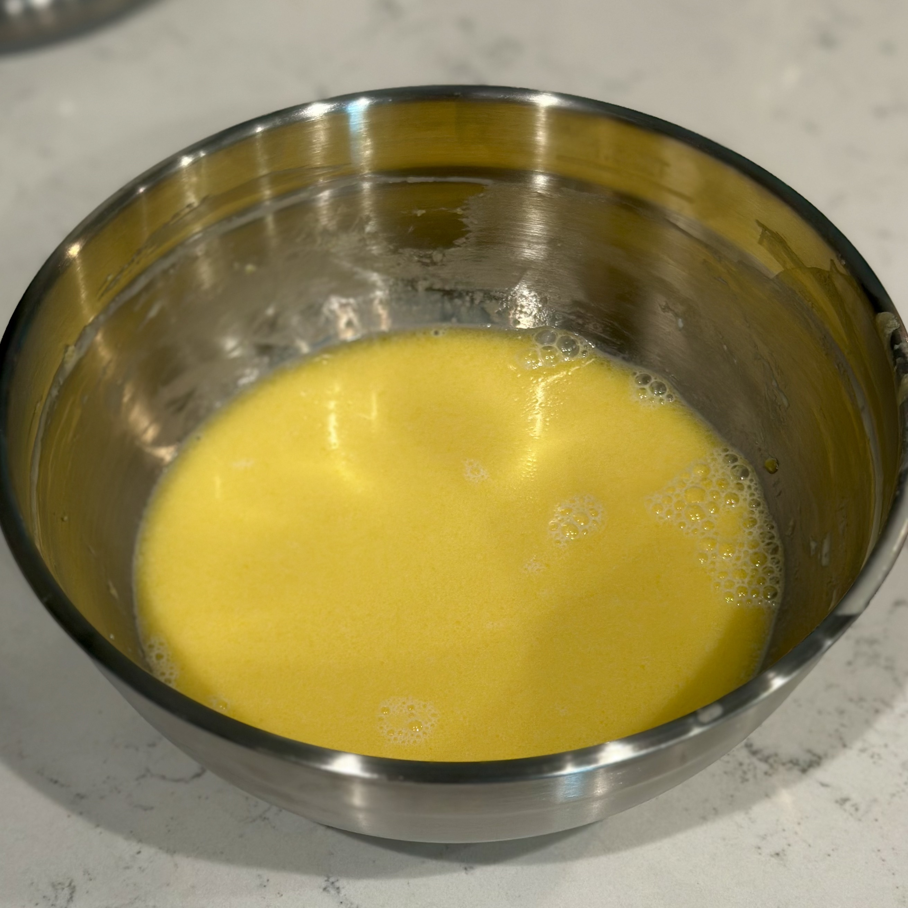
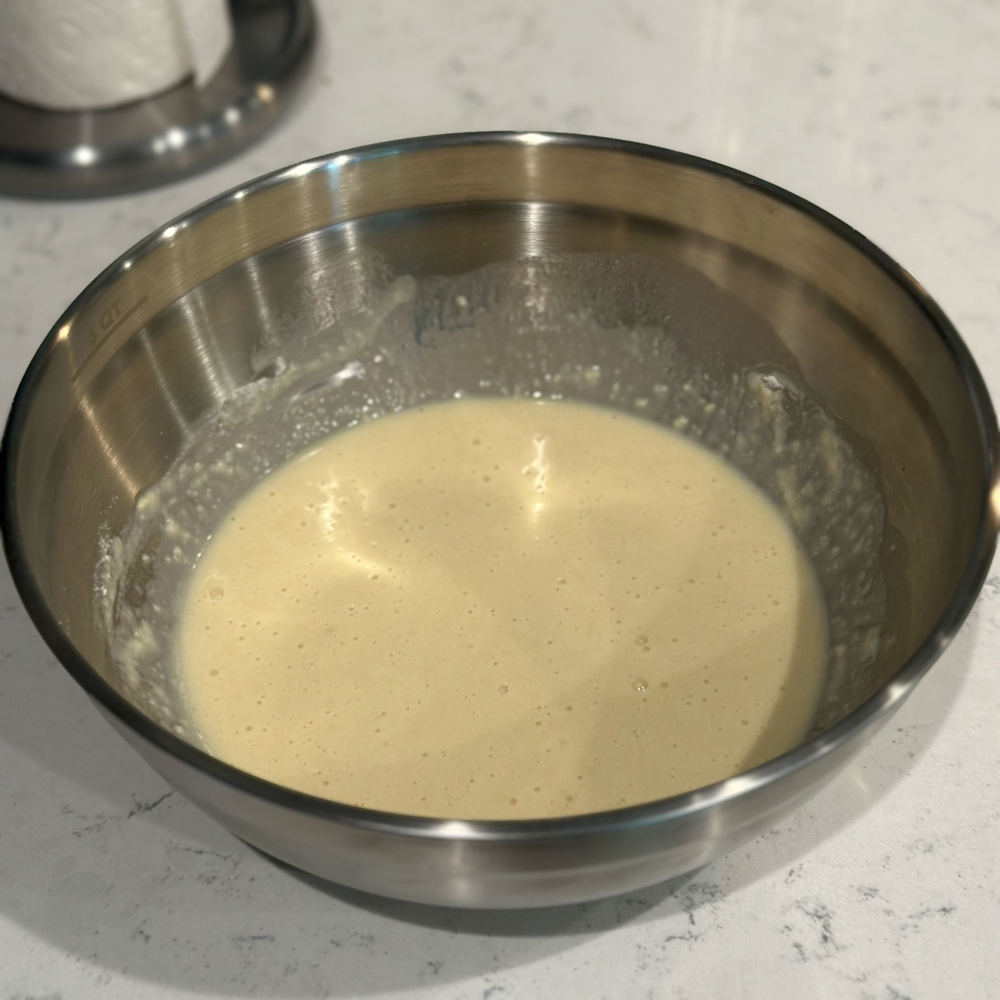
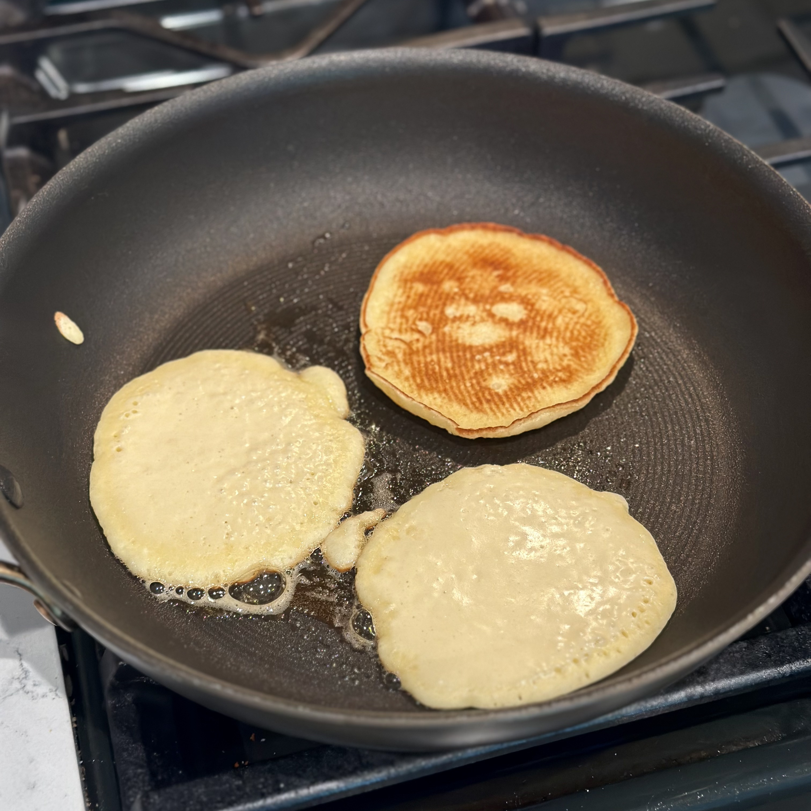
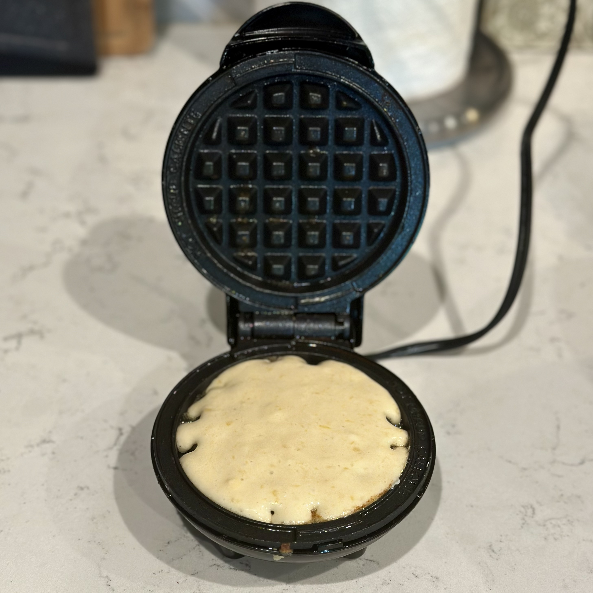
See Also
 Fruit Syrup
Fruit Syrup
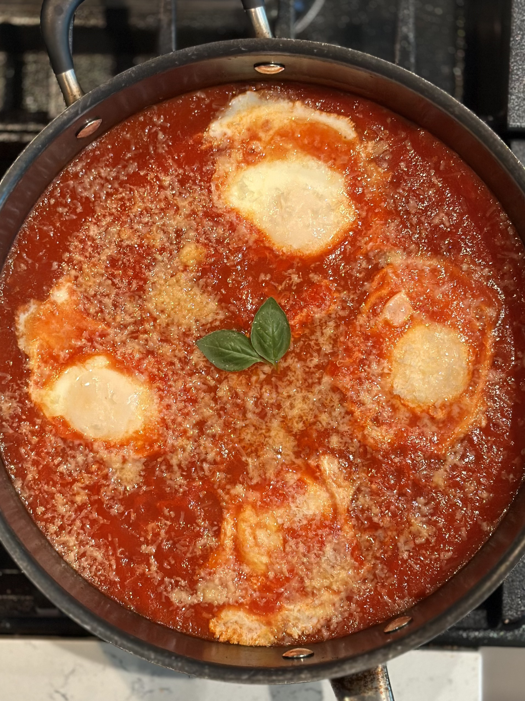
Uova al PurgatorioReferences
- Colby, Yve. “Pass the Syrup and Enjoy a Slice of History for National Waffle Day.” National Museum of American History, Smithsonian Institution, 23 Aug. 2017, americanhistory.si.edu/explore/stories/pass-syrup-and-enjoy-slice-history-national-waffle-day. Accessed 4 Sept. 2026.
- Kindy, David. “A Brief History of the Waffle Iron.” Smithsonian Magazine, 23 Aug. 2019, smithsonianmag.com/innovation/brief-history-waffle-iron-180972980. Accessed 4 Sept. 2026.
- Linden, Grace. “A Brief History of Pancakes.” Smithsonian Magazine, 21 Feb. 2023, smithsonianmag.com/history/a-brief-history-of-pancakes-180981667. Accessed 4 Sept. 2026.